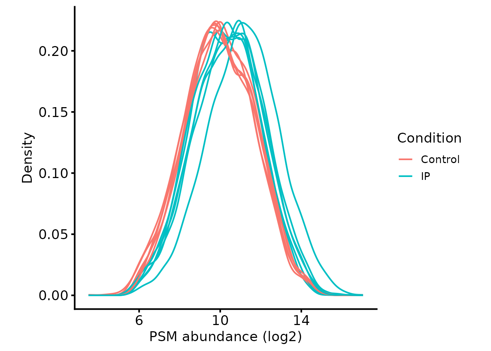
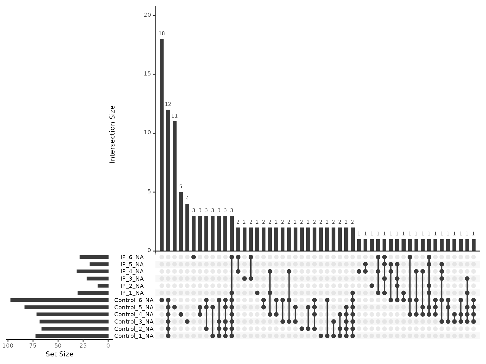
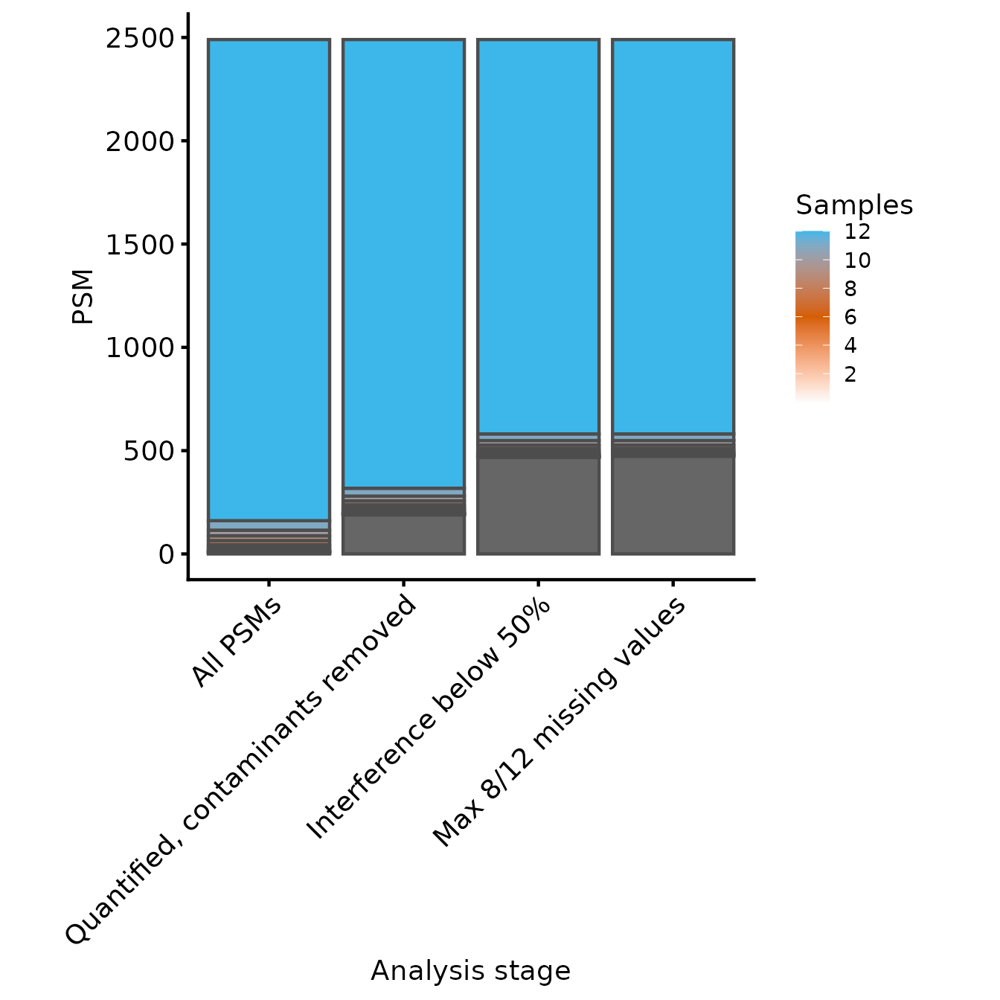
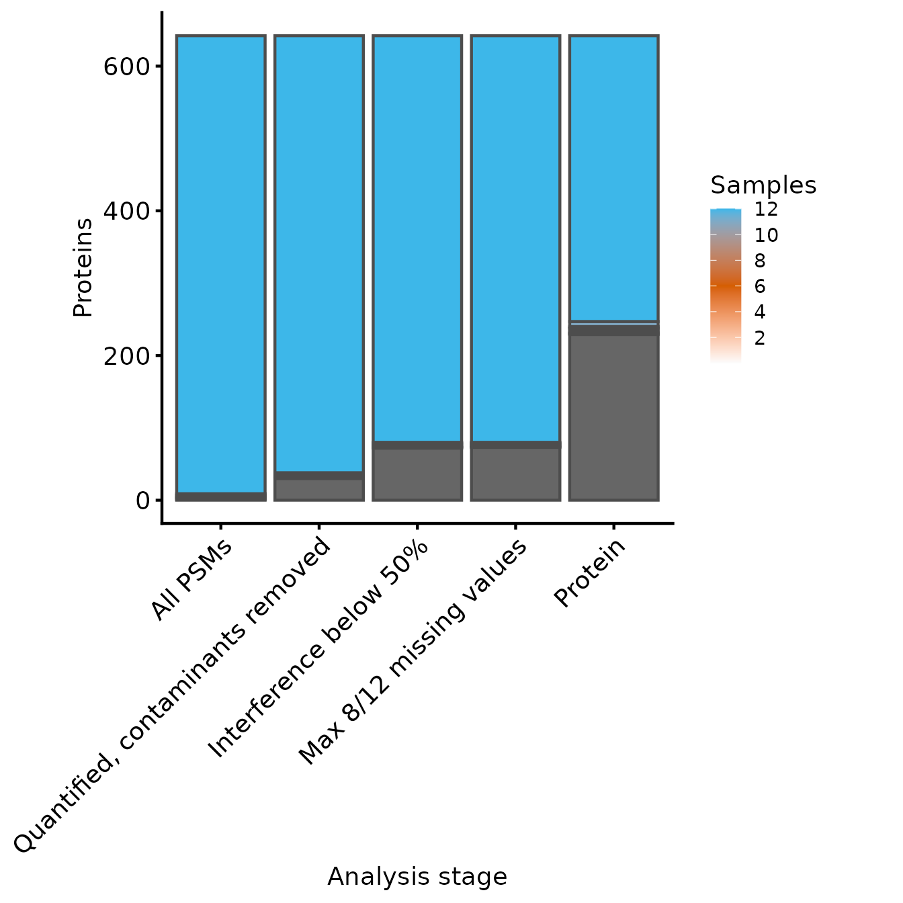
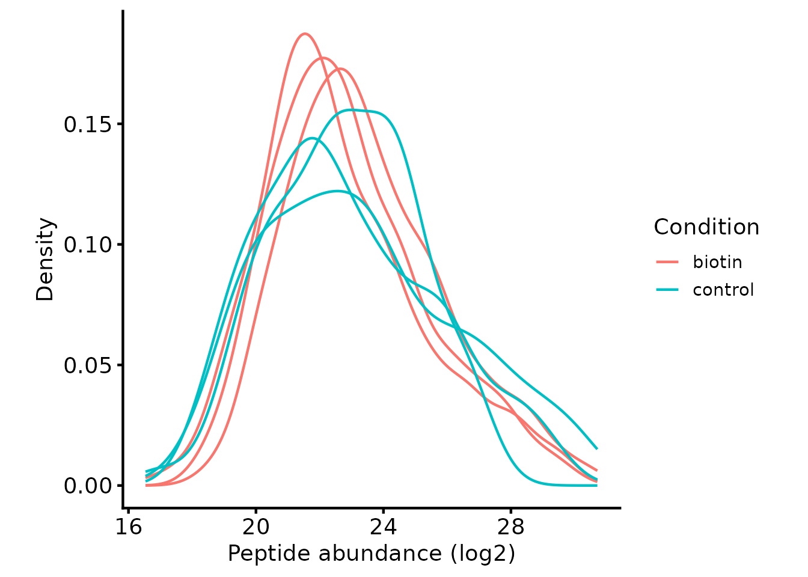
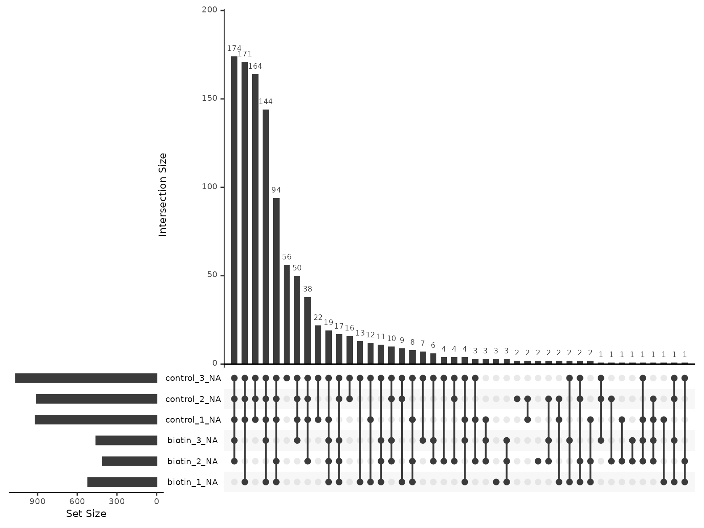

Enrichment designs: IP, BioID and TurboID
Tom Smith
2026-09-11
Source:vignettes/interactome_designs.Rmd
interactome_designs.RmdAn enrichment experiment — an immunoprecipitation, or a proximity labelling method such as BioID or TurboID — quantifies a deliberately unrepresentative slice of the proteome. What that slice is compared against varies. It may be a control pulldown, in which case the question is which proteins are recovered with the bait and which are background. It may equally be the same bait pulled down under two conditions such as wild-type against knockout or treated against untreated — in which case the question is which interactions change. Either way, every sample has been through an enrichment, and it is the enrichment, not the contrast, that invalidates several of the assumptions the whole-proteome vignettes rely on:
- The samples are not expected to have the same protein composition. The bait and its partners are specifically enriched, so median normalisation, which assumes most proteins are unchanged, removes part of the signal rather than a technical artefact.
- Absence is frequently real. A protein missing from every replicate of a given condition (e.g. control or KO) may be absent from the sample rather than undetected. Discarding features with missing values discards the strongest hits, and imputing them invents a background level that was never observed.
- The comparison is often one-sided. Depletion relative to control is rarely of interest, so a two-sided test spends power on a direction you do not care about.
How hard each of these bites depends on the contrast. All three are at their most severe against a control pulldown, where much of what is quantified is background and absence carries most of the information. Comparing the same bait between conditions is gentler — both sides have been enriched the same way, so the compositions are closer and a two-sided test is usually what you want — but the enrichment still shapes the data, and normalisation and missingness need the same scrutiny rather than the whole-proteome defaults.
Two experiments are worked through below, because the three consequences do not all bite in the same place and no single dataset shows all of them well.
- Part A: a TMT immunoprecipitation. The normalisation consequence is the live one. Within a TMT plex the channels are quantified from the same spectrum, and Part A shows by measurement that the second consequence does not materialise there at all.
- Part B: an LFQ-DDA TurboID pulldown, taken through to a tested list of candidate interactors. Here each sample is a separate run, absence from the control is common and real, and the second and third consequences decide the result.
Which of the two your own experiment resembles is set by the acquisition rather than by the pulldown, so it is worth reading both.
Part A: a TMT immunoprecipitation
The data are a real MaxQuant TMT18plex immunoprecipitation comparing
a bait pulldown (IP) against a control pulldown
(Control), 6 replicates each. The MaxQuant input also
differs in shape from the Proteome Discoverer output used in the TMT PSM QC and summarisation
vignette: the evidence.txt file uses different column names
(Leading.razor.protein instead of
Master.Protein.Accessions,
Reporter.intensity.corrected.* instead of
Abundance.*), and it does not report the PD-specific QC
metrics (signal:noise, interference, SPS-MM). Those differences are
noted as they arise.
Read in input data and design
psm_tmt_per2_mq and tmt_per2_mq_design are
the MaxQuant analogues of the
psm_tmt_clock/tmt_clock_design pair used in
that vignette: psm_tmt_per2_mq is the
evidence.txt PSM-level output (truncated to a subset of
proteins), and tmt_per2_mq_design gives the
Condition/Replicate for each sample.
knitr::kable(tmt_per2_mq_design)| Condition | Replicate | quantCols | |
|---|---|---|---|
| IP_1 | IP | 1 | IP_1 |
| Control_4 | Control | 4 | Control_4 |
| IP_5 | IP | 5 | IP_5 |
| Control_1 | Control | 1 | Control_1 |
| IP_4 | IP | 4 | IP_4 |
| Control_3 | Control | 3 | Control_3 |
| Control_6 | Control | 6 | Control_6 |
| IP_2 | IP | 2 | IP_2 |
| Control_2 | Control | 2 | Control_2 |
| IP_3 | IP | 3 | IP_3 |
| Control_5 | Control | 5 | Control_5 |
| IP_6 | IP | 6 | IP_6 |
tmt_qf_mq <- QFeatures::readQFeatures(assayData = psm_tmt_per2_mq,
colData = tmt_per2_mq_design,
quantCols = rownames(tmt_per2_mq_design),
name = "psms_raw")
#> Checking arguments.
#> Loading data as a 'SummarizedExperiment' object.
#> Formatting sample annotations (colData).
#> Formatting data as a 'QFeatures' object.
tmt_qf_mq <- sync_coldata(tmt_qf_mq, 'psms_raw')
tmt_qf_mq[['psms_raw']] <- QFeatures::zeroIsNA(tmt_qf_mq[['psms_raw']])Defining the contaminant proteins
MaxQuant has its own contaminants FASTA convention
(CON__ prefixed accessions).
get_maxquant_cont_accessions extracts these from the
contaminants FASTA bundled with the package, in the same way
get_contaminant_fasta_accessions does for the PD
contaminants FASTA in the TMT
PSM QC and summarisation vignette.
contaminant_proteins <- get_maxquant_cont_accessions()
#> No contaminants fasta supplied, defaulting to contaminants.fasta.gz from biomasslmbWe filter contaminants in the same way as for PD, using
filter_features_mq_dda in place of
filter_features_pd_dda. MaxQuant gives every PSM a single
razor protein rather than reporting a tie, so there is no
unique_master filter to apply here; the equivalent
information is the per-peptide Unique..Proteins. flag,
which this PSM-level export does not carry. See peptides are not proteins.
tmt_qf_mq[['psms_filtered']] <- filter_features_mq_dda(
tmt_qf_mq[['psms_raw']],
contaminant_proteins = contaminant_proteins,
filter_contaminant = TRUE,
filter_associated_contaminant = TRUE)
#> Filtering data...
#> 4960 features found from 666 master proteins => Input
#> 4960 features found from 666 master proteins => Removed hits to decoy database
#> 246 contaminant proteins supplied
#> 793 proteins identified as 'contaminant associated'
#> 4535 features found from 646 master proteins => contaminant features removed
#> 4414 features found from 635 master proteins => associated contaminant features removed
#> 4414 features found from 635 master proteins => MaxQuant-labelled 'Contaminants' removed
#> 4414 features found from 635 master proteins => features without a master protein removed
#> 3070 features found from 612 master proteins => features without quantification removed
tmt_qf_mq <- sync_coldata(tmt_qf_mq, 'psms_filtered')Normalise (or not)
Since this is an immunoprecipitation, the IP samples are expected to have a genuinely different protein composition to the controls: the bait and its interactors are specifically enriched. Standard normalisation assumes overall protein content is equivalent between samples and would partially erode this real biological difference, so — unlike a whole-proteome comparison — we do not normalise here. Where normalisation is still desired for this kind of experiment, an alternative to standard whole-proteome normalisation is to define a set of ‘invariant’ proteins that are expected to be equally abundant across all samples (e.g. proteins with no plausible relationship to the bait) and normalise using only these.
plot_quant(tmt_qf_mq[['psms_filtered']], log2transform=TRUE, method='density') +
theme_biomasslmb() +
aes(colour=Condition, group=sample) +
xlab('PSM abundance (log2)')
Removing low quality PSMs
filter_TMT_PSMs still removes PSMs with no
quantification values at all, but with from_PD = FALSE it
skips the PD-specific Quan.Info/PSM.Ambiguity
checks. We also need to point it at the MaxQuant protein column,
Leading.razor.protein.
Co-isolation is reported, under a different name and on the opposite
scale. PD gives Isolation.Interference.in.Percent, the
share of the isolation window that did not come from the target
precursor. MaxQuant gives PIF, the precursor intensity
fraction, which is the share that did. They are complements, so one
converts into the other and filter_TMT_PSMs can use it
unchanged.
interference_mq <- (1 - rowData(tmt_qf_mq[['psms_filtered']])$PIF) * 100
pif_missing <- sum(is.na(interference_mq))
interference_mq[is.na(interference_mq)] <- 100
rowData(tmt_qf_mq[['psms_filtered']])$Isolation.Interference.in.Percent <- interference_mqPIF is NA for 277 of the 3070 PSMs, where
MaxQuant could not assess the isolation window. Assigning those 100%
treats an unassessable window as a failed one, so they are discarded
rather than passed through unchecked.
Signal:noise and SPS-MM have no MaxQuant counterpart — the reporter
columns hold corrected intensities rather than S:N ratios, and
evidence.txt carries no SPS mass-match statistic — so
sn_thresh and spsmm_thresh stay at their ‘no
filtering’ defaults.
tmt_qf_mq[['psms_filtered_interference']] <- filter_TMT_PSMs(
tmt_qf_mq[['psms_filtered']],
inter_thresh = 50, sn_thresh = 0, spsmm_thresh = 0,
master_protein_col = 'Leading.razor.protein',
from_PD = FALSE)
#> Filtering PSMs...
#> 3070 features found from 612 master proteins => Initial PSMs
#> 3070 features found from 612 master proteins => Removing PSMs without quantification values
#> 2590 features found from 570 master proteins => Removing PSMs with high Co-isolation/interference
#> Not performing filtering by average S:N ratio (`sn_thresh`=0)
#> Not performing filtering by SPS-MM (`spsmm_thresh`=0)
tmt_qf_mq <- sync_coldata(tmt_qf_mq, 'psms_filtered_interference')That drops 480 PSMs, 277 of them for an unassessable window rather
than a measured one. Worth knowing which half of the loss you are
taking: raising the threshold relaxes the measured group, but the
NA group only leaves if you choose to keep it.
Exploring missing values
We check the missingness structure before deciding how to handle it,
using plot_missing_upset and
condition_miss_score/condition_miss_index (the
TMT PSM QC and summarisation
vignette explains these functions more fully).
plot_missing_upset(tmt_qf_mq, i = 'psms_filtered_interference')
miss_res_mq <- condition_miss_score(tmt_qf_mq, i = 'psms_filtered_interference', group_cols = 'Condition')
#> Analysing assay 'psms_filtered_interference': 2590 features x 12 samples
#> Group variable: Condition (2 levels: Control, IP)
#> Results: 172 informative features | mean condition miss score = 0.277 | condition-structured: 0.9% | condition-independent: 4.2%
condition_miss_index(miss_res_mq$summary)$index
#> Condition missingness index: 0.0256 | Weighted mean score: 0.3852 | Coverage: 6.6% (172 / 2590 features informative) [coverage penalty applied]
#> [1] 0.02558401A meaningful fraction of PSMs here have missing values (172 out of
2590), consistent with this being an IP rather than a whole-proteome
comparison: a protein absent from the control pulldown is expected to be
missing in every Control replicate but present in every
IP replicate. The condition missingness index is still
modest, so this isn’t yet a dominant pattern at the PSM level, but it’s
enough to make blanket removal of any PSM with a missing value an
unattractive option here.
Summarising to protein-level abundances
Since missing values here are more likely to be genuinely informative
— a protein absent from the control pulldown — than in a whole-proteome
comparison, instead of removing every PSM with any missing value, we
retain PSMs with a modest number of missing values and use
MsCoreUtils::robustSummary, which handles missing values
appropriately during aggregation (see the Comparing protein summarisation
approaches vignette for a direct comparison with
sum).
tmt_qf_mq[['psms_filtered_interference']] <- QFeatures::logTransform(
tmt_qf_mq[['psms_filtered_interference']], base = 2)
tmt_qf_mq[['psms_filtered_forSummary']] <- QFeatures::filterNA(
tmt_qf_mq[['psms_filtered_interference']], 8/12)
message_parse(rowData(tmt_qf_mq[['psms_filtered_forSummary']]),
'Leading.razor.protein',
"Removing PSMs with excessive missing values")
#> 2581 features found from 569 master proteins => Removing PSMs with excessive missing values
tmt_qf_mq <- QFeatures::aggregateFeatures(
tmt_qf_mq,
i = "psms_filtered_forSummary",
fcol = "Leading.razor.protein",
name = "protein",
fun = MsCoreUtils::robustSummary)
#> Your quantitative and row data contain missing values. Please read the
#> relevant section(s) in the aggregateFeatures manual page regarding the
#> effects of missing values on data aggregation.
#> Aggregated: 1/1
tmt_qf_mq <- sync_coldata(tmt_qf_mq, 'protein')Requiring more than one PSM behind every value
Having taken care to preserve the informative missing values, it is worth asking how many of them reached protein level.
count_quantified <- function(se, group_col = 'Condition'){
groups <- colData(se)[[group_col]]
sapply(sort(unique(groups)), function(g){
rowSums(!is.na(assay(se)[, groups == g, drop = FALSE]))
})
}
n_quant_mq <- count_quantified(tmt_qf_mq[['protein']])
c(protein_percent_missing = round(
100 * mean(is.na(assay(tmt_qf_mq[['protein']]))), 2),
proteins_absent_from_control = sum(n_quant_mq[, 'Control'] == 0))
#> protein_percent_missing proteins_absent_from_control
#> 0.23 0.00Almost none, and none at all in the pattern the design predicts.
robustSummary gives a protein a value in a sample whenever
any of its PSMs was quantified there, so a protein loses a
channel only when every one of its PSMs does.
That is not a reassuring result, because it means a protein-level
value can rest on a single PSM in one channel and several in another,
and nothing in the matrix says which. The QC vignettes for both LFQ
acquisition types apply the same correction:
get_protein_no_quant_mask() finds the protein-by-sample
cells built from fewer than min_features features, and
mask_protein_level_quant() returns them to
NA.
retain_mask_mq <- get_protein_no_quant_mask(
tmt_qf_mq[['psms_filtered_forSummary']], min_features = 2,
master_protein_col = 'Leading.razor.protein')
tmt_qf_mq[['protein']] <- mask_protein_level_quant(
tmt_qf_mq[['protein']], retain_mask_mq)
n_quant_masked <- count_quantified(tmt_qf_mq[['protein']])
c(proteins_absent_from_control = sum(n_quant_masked[, 'Control'] == 0),
proteins_with_no_values_at_all = sum(rowSums(n_quant_masked) == 0))
#> proteins_absent_from_control proteins_with_no_values_at_all
#> 157 156Masking empties 156 proteins entirely — each had a single PSM in every channel, so requiring two leaves nothing. The two counts differ by 1, and that difference is the answer to the question this section asked: it is how many proteins are left quantified in the IP and absent from the control.
So the presence/absence pattern an enrichment experiment is supposed to generate is all but absent from this dataset, rather than being hidden by summarisation. Within a plex all twelve channels are quantified from the same MS2 spectrum, so a protein pulled down in the IP and absent from the control does not go missing in the control channels — it registers there at whatever low reporter intensity co-isolation and the isolation window give it. TMT turns what would be an on/off result in separate runs into a compressed ratio.
That is worth knowing in its own right, because it means the second consequence listed at the top of this article barely applies to a single-plex TMT pulldown, whatever it does to the label-free case in Part B.
A protein with no quantification left in any sample is not data, so we drop those rather than carry them.
tmt_qf_mq[['protein']] <- tmt_qf_mq[['protein']][
rowSums(!is.na(assay(tmt_qf_mq[['protein']]))) > 0, ]
#> Warning in replaceAssay(x = x, y = value, i = i): Links between assays were
#> lost/removed during replacement. See '?addAssayLink' to restore them manually.
c(proteins = nrow(tmt_qf_mq[['protein']]),
percent_missing = round(100 * mean(is.na(assay(tmt_qf_mq[['protein']]))), 2))
#> proteins percent_missing
#> 413.00 1.07Inspecting the number of PSMs and proteins through the processing steps
rename_cols_mq <- c('All PSMs' = 'psms_raw',
'Quantified, contaminants removed' = 'psms_filtered',
'Interference below 50%' = 'psms_filtered_interference',
'Max 8/12 missing values' = 'psms_filtered_forSummary')
rowvars_mq <- c('Sequence', 'Modifications')
samples_present_mq <- get_samples_present(
tmt_qf_mq[,,unname(rename_cols_mq)], rowvars_mq, rename_cols_mq)
#> Warning: 'experiments' dropped; see 'drops()'
#> harmonizing input:
#> removing 12 sampleMap rows not in names(experiments)
plot_samples_present(samples_present_mq, rowvars_mq, breaks=seq(2,12,2)) + ylab('PSM')
#> Scale for fill is already present.
#> Adding another scale for fill, which will replace the existing scale.
rename_cols_mq_prot <- c(rename_cols_mq, 'Protein' = 'protein')
rowvars_mq_prot <- c('Leading.razor.protein')
samples_present_mq_prot <- get_samples_present(tmt_qf_mq, rowvars_mq_prot, rename_cols_mq_prot)
plot_samples_present(samples_present_mq_prot, rowvars_mq_prot, breaks=seq(2,12,2))
#> Scale for fill is already present.
#> Adding another scale for fill, which will replace the existing scale.
# Save file to package as data so it can be read back in in other vignettes
usethis::use_data(tmt_qf_mq, overwrite=TRUE)Part B: an LFQ-DDA TurboID pulldown
lfq_dda_pd_turboid_PeptideGroups.txt is Proteome
Discoverer peptide-level output from a TurboID experiment in mouse
cells: three biotin-treated samples against three untreated controls,
subset to 500 proteins. Because each sample is a separate acquisition
rather than a channel in a shared spectrum, the presence/absence pattern
that Part A could not produce is the dominant feature of this dataset
from the start.
turboid_inf <- system.file(
"extdata", "lfq_dda_pd_turboid_PeptideGroups.txt", package = "biomasslmb")
infdf <- read.delim(turboid_inf)
abundance_cols_ix <- grep('^Abundance', colnames(infdf))
colnames(infdf)[abundance_cols_ix]
#> [1] "Abundance.F2.Sample.biotin" "Abundance.F4.Sample.biotin"
#> [3] "Abundance.F6.Sample.biotin" "Abundance.F1.Sample.control"
#> [5] "Abundance.F3.Sample.control" "Abundance.F5.Sample.control"The condition is encoded in the abundance column names, so the design is derived from them rather than read from a separate table.
turboid_design <- data.frame(
quantCols = colnames(infdf)[abundance_cols_ix],
Condition = sub('.*Sample[.]', '', colnames(infdf)[abundance_cols_ix]))
turboid_design$Replicate <- as.integer(ave(
turboid_design$Condition, turboid_design$Condition, FUN = seq_along))
turboid_design$Sample <- paste(
turboid_design$Condition, turboid_design$Replicate, sep = '_')
colnames(infdf)[abundance_cols_ix] <- turboid_design$Sample
turboid_design$quantCols <- turboid_design$Sample
knitr::kable(turboid_design)| quantCols | Condition | Replicate | Sample |
|---|---|---|---|
| biotin_1 | biotin | 1 | biotin_1 |
| biotin_2 | biotin | 2 | biotin_2 |
| biotin_3 | biotin | 3 | biotin_3 |
| control_1 | control | 1 | control_1 |
| control_2 | control | 2 | control_2 |
| control_3 | control | 3 | control_3 |
lfq_qf_turboid <- readQFeatures(assayData = infdf,
quantCols = abundance_cols_ix,
colData = turboid_design,
name = 'peptides_raw')
#> Checking arguments.
#> Loading data as a 'SummarizedExperiment' object.
#> Formatting sample annotations (colData).
#> Formatting data as a 'QFeatures' object.
lfq_qf_turboid <- sync_coldata(lfq_qf_turboid, 'peptides_raw')Filtering
The filtering is the LFQ-DDA sequence from the LFQ-DDA QC vignette, against the PD contaminants database.
contaminant_accessions <- get_contaminant_fasta_accessions(system.file(
"extdata", "0602_Universal_Contaminants.fasta.gz", package = "biomasslmb"))
contaminant_accessions <- c(contaminant_accessions,
sub('^Cont_', '', contaminant_accessions))
lfq_qf_turboid[['peptides']] <- filter_features_pd_dda(
lfq_qf_turboid[['peptides_raw']],
contaminant_proteins = contaminant_accessions,
filter_contaminant = TRUE,
filter_associated_contaminant = TRUE,
unique_master = TRUE,
remove_no_quant = TRUE)
lfq_qf_turboid[['peptides']] <- logTransform(
lfq_qf_turboid[['peptides']], base = 2)
lfq_qf_turboid <- sync_coldata(lfq_qf_turboid, 'peptides')As in Part A, we do not median-normalise: the biotin samples are expected to contain a different set of proteins from the controls, which is the whole point of the experiment.
plot_quant(lfq_qf_turboid[['peptides']], log2transform = FALSE, method = 'density') +
theme_biomasslmb() +
aes(colour = Condition, group = sample) +
xlab('Peptide abundance (log2)')
Missingness is the signal here
turboid_miss <- condition_miss_score(
lfq_qf_turboid, i = 'peptides', group_cols = 'Condition')
#> Analysing assay 'peptides': 1142 features x 6 samples
#> Group variable: Condition (2 levels: biotin, control)
#> Results: 642 informative features | mean condition miss score = 0.530 | condition-structured: 14.6% | condition-independent: 14.4%
condition_miss_index(turboid_miss$summary)$index
#> Condition missingness index: 0.3076 | Weighted mean score: 0.5472 | Coverage: 56.2% (642 / 1142 features informative) [coverage penalty applied]
#> [1] 0.3076012That index is an order of magnitude above the whole-proteome datasets in handling missing values, and the reason is visible in how one-sided the pattern is.
plot_missing_upset(lfq_qf_turboid, i = 'peptides')
The sample names sort the sets into their two conditions, which makes the structure easy to read. The five largest combinations all include the three controls; they differ only in how many biotin samples are missing as well.
pep_quant <- assay(lfq_qf_turboid[['peptides']])
pep_cond <- lfq_qf_turboid[['peptides']]$Condition
c(percent_missing = round(100 * mean(is.na(pep_quant)), 1),
all_biotin_no_control = sum(
rowSums(!is.na(pep_quant[, pep_cond == 'biotin'])) == 3 &
rowSums(!is.na(pep_quant[, pep_cond == 'control'])) == 0),
all_control_no_biotin = sum(
rowSums(!is.na(pep_quant[, pep_cond == 'control'])) == 3 &
rowSums(!is.na(pep_quant[, pep_cond == 'biotin'])) == 0))
#> percent_missing all_biotin_no_control all_control_no_biotin
#> 62.3 164.0 3.0They are not the same size, and the asymmetry is the enrichment: peptides appear in the biotin samples and vanish from the controls, not the other way round. Discarding features with missing values would remove that finding and leave the experiment looking like a weak version of itself.
Summarising to protein level
lfq_qf_turboid[['peptides_filtered']] <- filterNA(
lfq_qf_turboid[['peptides']], 4/6)
lfq_qf_turboid[['peptides_for_summarisation']] <- filter_features_per_protein(
lfq_qf_turboid[['peptides_filtered']], min_features = 2)
set.seed(42)
lfq_qf_turboid <- aggregateFeatures(
lfq_qf_turboid, i = 'peptides_for_summarisation',
fcol = 'Master.Protein.Accessions', name = 'protein',
fun = MsCoreUtils::robustSummary, maxit = 10000)
lfq_qf_turboid <- sync_coldata(lfq_qf_turboid, 'protein')
retain_mask_turboid <- get_protein_no_quant_mask(
lfq_qf_turboid[['peptides_for_summarisation']], min_features = 2)
lfq_qf_turboid[['protein']] <- mask_protein_level_quant(
lfq_qf_turboid[['protein']], retain_mask_turboid)The 4/6 threshold is what keeps the on/off peptides: a
peptide seen in all three biotin samples and no control has three
missing values, and a stricter threshold would discard exactly the
features carrying the signal.
Which proteins can be tested?
n_quant_turboid <- count_quantified(lfq_qf_turboid[['protein']])
knitr::kable(table(control = n_quant_turboid[, 'control'],
biotin = n_quant_turboid[, 'biotin']))| 1 | 2 | 3 | |
|---|---|---|---|
| 0 | 4 | 22 | 37 |
| 1 | 2 | 1 | 4 |
| 2 | 0 | 0 | 10 |
| 3 | 0 | 1 | 9 |
Read the first row. Most of the proteins in this experiment were quantified in two or three biotin samples and in none of the controls — the result the pulldown was run to produce.
whole_proteome <- rownames(n_quant_turboid)[
apply(n_quant_turboid, 1, min) >= 2]
candidates <- rownames(n_quant_turboid)[n_quant_turboid[, 'biotin'] >= 2]
c(proteins = nrow(n_quant_turboid),
whole_proteome_rule = length(whole_proteome),
enrichment_rule = length(candidates),
absent_from_control = sum(n_quant_turboid[, 'control'] == 0))
#> proteins whole_proteome_rule enrichment_rule absent_from_control
#> 90 20 84 63The rule used in the whole-proteome vignettes — at least two quantified values in both conditions — keeps 20 of the 90 proteins. It is the right rule there and the wrong one here, because in an enrichment experiment “not quantified in the control” is the outcome of interest rather than a failure to measure.
The rule that matches the design asks for enough measurements in the enriched condition to estimate the protein at all, and treats the control side as something to be modelled rather than required. That keeps 84 proteins.
Imputing only where absence is defensible
Requiring two biotin values leaves proteins that limma
still cannot fit, because a group with no values has no mean.
restrict_imputation() fills those in from a low-abundance
distribution, but only in the conditions and at the missingness levels
you nominate — here, control samples where at most one replicate was
quantified.
That happens in two steps, and the first fills every missing value in
the assay. QFeatures::impute() produces a completely
imputed copy; restrict_imputation() then builds a third
assay by starting from the unimputed data and copying cells out of the
imputed one wherever use_imputed_df says imputation is
warranted. It selects rather than imputes, so it needs a complete matrix
to select from.
set.seed(42)
lfq_qf_turboid <- QFeatures::impute(
lfq_qf_turboid, i = 'protein', name = 'protein_imputed', method = 'MinProb')
#> [1] 1.49165
use_imputed_df <- data.frame(Condition = 'control', n_finite = c(0, 1))
lfq_qf_turboid <- restrict_imputation(
lfq_qf_turboid,
i_unimputed = 'protein',
i_imputed = 'protein_imputed',
i_restricted_imputed = 'protein_restricted',
use_imputed_df = use_imputed_df)The assumption being made is explicit and checkable: a protein seen in the biotin samples and not the controls is being treated as present at a level below detection in the controls, not as unmeasured. That is defensible for a pulldown in a way it is not for a whole-proteome comparison, where the same missing value is more likely to be an ordinary detection failure. Nothing is imputed in the biotin samples, and nothing is imputed for a control with two or three quantified replicates.
One-sided testing
quant_turboid <- assay(lfq_qf_turboid[['protein_restricted']])[candidates, ]
condition <- factor(
lfq_qf_turboid[['protein_restricted']]$Condition,
levels = c('control', 'biotin'))
fit_turboid <- eBayes(
lmFit(quant_turboid, model.matrix(~ condition)),
trend = TRUE, robust = TRUE)
res_turboid <- topTable(fit_turboid, coef = 2, number = Inf, sort.by = 'none')limma reports a two-sided p-value: the probability of a
difference this large in either direction. A protein depleted
relative to the control is not a candidate interactor, so half of that
p-value is being spent on an outcome the experiment does not care about.
Halving it for proteins enriched in the pulldown, and taking the
complement for the rest, converts it to a one-sided test of enrichment;
the adjustment for multiple testing then applies to those p-values.
res_turboid$P.Value.OneSided <- ifelse(
res_turboid$logFC > 0,
res_turboid$P.Value / 2,
1 - res_turboid$P.Value / 2)
res_turboid$adj.P.Val.OneSided <- p.adjust(
res_turboid$P.Value.OneSided, method = 'BH')
c(two_sided_enriched = sum(res_turboid$adj.P.Val < 0.05 & res_turboid$logFC > 0),
one_sided_enriched = sum(res_turboid$adj.P.Val.OneSided < 0.05))
#> two_sided_enriched one_sided_enriched
#> 53 58The gain is modest and it is not free: the one-sided test cannot report depletion at all, so it is only appropriate where depletion genuinely is uninteresting. In a pulldown it is. In a comparison between two treatments it is not, which is why the whole-proteome vignettes do not do this.
What the design-appropriate route recovered
hits <- rownames(res_turboid)[res_turboid$adj.P.Val.OneSided < 0.05]
c(candidate_interactors = length(hits),
absent_from_control = sum(n_quant_turboid[hits, 'control'] == 0),
untestable_under_whole_proteome_rule = sum(!hits %in% whole_proteome))
#> candidate_interactors absent_from_control
#> 58 43
#> untestable_under_whole_proteome_rule
#> 4848 of the 58 candidate interactors would never have been tested under the whole-proteome testability rule. They are not marginal calls that the rule was right to be cautious about — they are the proteins with the cleanest presence/absence separation in the experiment, excluded for having too few measurements in the condition where the design predicts they should have none.
Report the per-condition counts alongside the result, as in the whole-proteome vignettes, so that a reader can tell a protein quantified in three biotin samples and imputed in three controls from one measured in all six.
head(data.frame(
Protein = hits,
logFC = round(res_turboid[hits, 'logFC'], 2),
adj.P.Val = signif(res_turboid[hits, 'adj.P.Val.OneSided'], 2),
n_biotin = n_quant_turboid[hits, 'biotin'],
n_control = n_quant_turboid[hits, 'control']) %>%
arrange(adj.P.Val), 8)
#> Protein logFC adj.P.Val n_biotin n_control
#> Q9DC23 Q9DC23 6.85 1.5e-05 3 1
#> P18572 P18572 6.75 2.7e-05 3 0
#> P02469 P02469 5.01 9.7e-05 3 3
#> Q61937 Q61937 6.58 9.7e-05 3 1
#> Q99KF1 Q99KF1 5.86 9.7e-05 3 0
#> P20029 P20029 5.08 1.1e-04 3 3
#> Q61090 Q61090 6.54 1.1e-04 3 0
#> O08795 O08795 5.60 1.2e-04 3 2
# Save file to package as data so it can be read back in in other vignettes
usethis::use_data(lfq_qf_turboid, overwrite=TRUE)Where to go next
Part A leaves tmt_qf_mq holding protein-level abundances
with the informative missing values preserved and every value backed by
at least two PSMs. The data exploration and
statistical testing vignette picks it up and works through the
exploratory checks — sample correlation, PCA, inspecting a hit across
the processing steps — that any design needs before testing, using the
two-sided treatment for comparison with the route above.
For the enrichment-specific decisions, Part B is the worked example:
a testability rule that keeps the control-absent proteins, imputation
restricted to the condition where absence is defensible, and a one-sided
test. Handling missing values
covers restrict_imputation() and the alternatives to it in
more depth, including what blanket imputation costs.
Getting help
If your experiment does not fit what this article assumes, or a result looks wrong, please get in touch with Tom Smith (tsmith@mrclmb.ac.uk) rather than guessing — it is far easier to help while an analysis is in progress than to unpick a decision afterwards, and easier still before the samples are run. Getting started sets out which article applies to which experiment.
sessionInfo()
#> R version 4.5.3 (2026-03-11)
#> Platform: x86_64-pc-linux-gnu
#> Running under: Ubuntu 24.04.5 LTS
#>
#> Matrix products: default
#> BLAS: /usr/lib/x86_64-linux-gnu/openblas-pthread/libblas.so.3
#> LAPACK: /usr/lib/x86_64-linux-gnu/openblas-pthread/libopenblasp-r0.3.26.so; LAPACK version 3.12.0
#>
#> locale:
#> [1] LC_CTYPE=C.UTF-8 LC_NUMERIC=C LC_TIME=C.UTF-8
#> [4] LC_COLLATE=C.UTF-8 LC_MONETARY=C.UTF-8 LC_MESSAGES=C.UTF-8
#> [7] LC_PAPER=C.UTF-8 LC_NAME=C LC_ADDRESS=C
#> [10] LC_TELEPHONE=C LC_MEASUREMENT=C.UTF-8 LC_IDENTIFICATION=C
#>
#> time zone: UTC
#> tzcode source: system (glibc)
#>
#> attached base packages:
#> [1] stats4 stats graphics grDevices utils datasets methods
#> [8] base
#>
#> other attached packages:
#> [1] limma_3.66.0 dplyr_1.2.1
#> [3] tidyr_1.3.2 ggplot2_4.0.3
#> [5] biomasslmb_0.1.0 QFeatures_1.20.0
#> [7] MultiAssayExperiment_1.36.2 SummarizedExperiment_1.40.0
#> [9] Biobase_2.70.0 GenomicRanges_1.62.1
#> [11] Seqinfo_1.0.0 IRanges_2.44.0
#> [13] S4Vectors_0.48.1 BiocGenerics_0.56.0
#> [15] generics_0.1.4 MatrixGenerics_1.22.0
#> [17] matrixStats_1.5.0
#>
#> loaded via a namespace (and not attached):
#> [1] DBI_1.3.0 gridExtra_2.3.1 sandwich_3.1-3
#> [4] rlang_1.3.0 magrittr_2.0.5 clue_0.3-68
#> [7] otel_0.2.0 compiler_4.5.3 RSQLite_3.53.3
#> [10] png_0.1-9 systemfonts_1.3.2 vctrs_0.7.3
#> [13] reshape2_1.4.5 stringr_1.6.0 ProtGenerics_1.42.0
#> [16] pkgconfig_2.0.3 crayon_1.5.3 fastmap_1.2.0
#> [19] backports_1.5.1 XVector_0.50.0 labeling_0.4.3
#> [22] rmarkdown_2.32 UpSetR_1.4.1 visdat_0.6.0
#> [25] ragg_1.5.2 purrr_1.2.2 bit_4.6.0
#> [28] xfun_0.60 cachem_1.1.0 jsonlite_2.0.0
#> [31] gmm_1.9-1 blob_1.3.0 DelayedArray_0.36.1
#> [34] cluster_2.1.8.2 R6_2.6.1 bslib_0.12.0
#> [37] stringi_1.8.9 RColorBrewer_1.1-3 genefilter_1.92.0
#> [40] jquerylib_0.1.4 Rcpp_1.1.2 knitr_1.52
#> [43] zoo_1.9-0 BiocBaseUtils_1.12.0 Matrix_1.7-4
#> [46] splines_4.5.3 igraph_2.3.3 tidyselect_1.2.1
#> [49] abind_1.4-8 yaml_2.3.12 lattice_0.22-9
#> [52] tibble_3.3.1 plyr_1.8.9 withr_3.0.3
#> [55] KEGGREST_1.50.0 S7_0.2.2 tmvtnorm_1.7
#> [58] evaluate_1.0.5 uniprotREST_1.0.0 desc_1.4.3
#> [61] survival_3.8-6 norm_1.0-11.1 Biostrings_2.78.0
#> [64] pillar_1.11.1 corrplot_0.95 checkmate_2.3.4
#> [67] scales_1.4.0 xtable_1.8-8 glue_1.8.1
#> [70] lazyeval_0.2.3 tools_4.5.3 robustbase_0.99-7
#> [73] annotate_1.88.0 imputeLCMD_2.1 mvtnorm_1.4-2
#> [76] fs_2.1.0 XML_3.99-0.24 grid_4.5.3
#> [79] impute_1.84.0 MsCoreUtils_1.22.1 AnnotationDbi_1.72.0
#> [82] naniar_1.1.0 cli_3.6.6 textshaping_1.0.5
#> [85] S4Arrays_1.10.1 AnnotationFilter_1.34.0 pcaMethods_2.2.0
#> [88] gtable_0.3.6 DEoptimR_1.2-1 sass_0.4.10
#> [91] digest_0.6.39 SparseArray_1.10.10 htmlwidgets_1.6.4
#> [94] farver_2.1.2 memoise_2.0.1 htmltools_0.5.9
#> [97] pkgdown_2.2.1 lifecycle_1.0.5 httr_1.4.9
#> [100] statmod_1.5.2 bit64_4.8.6 MASS_7.3-65